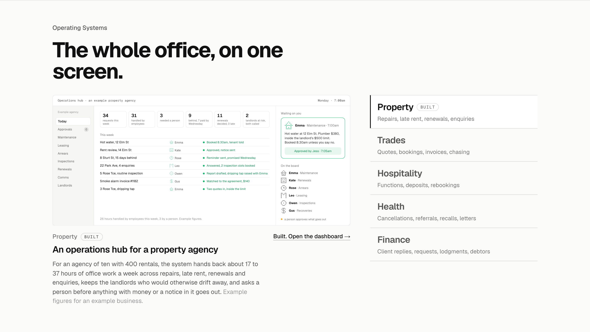
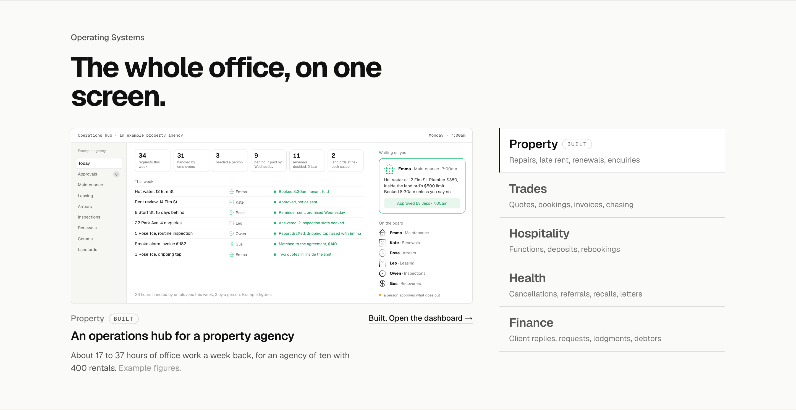
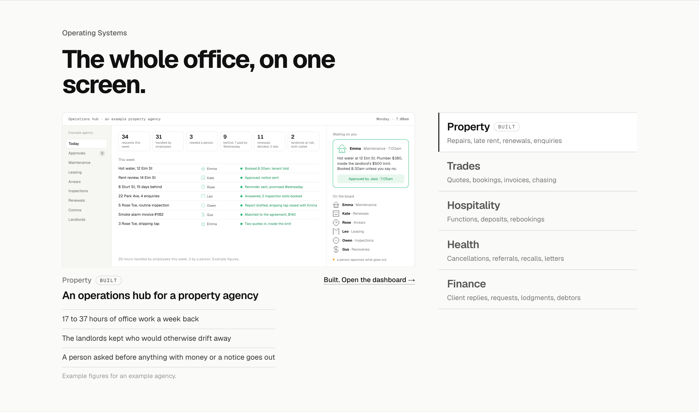
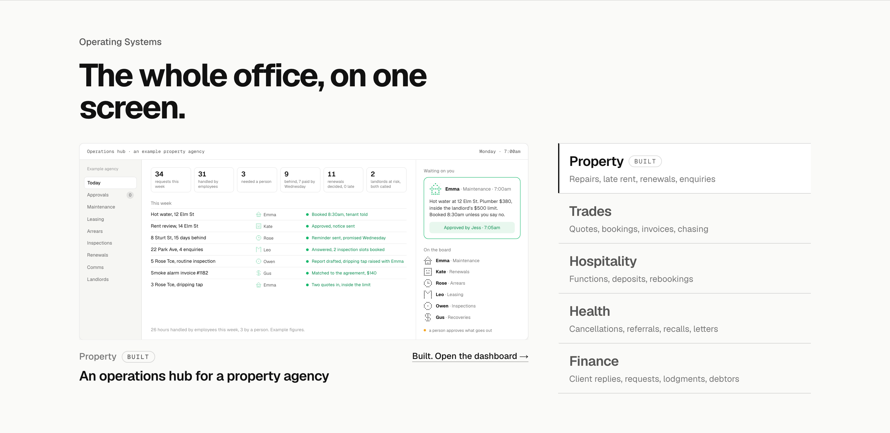

Operating Systems: the line under the screen three ways
Detail 3 of 5. The section with your heading and the industry-first list in place, Property active; only the line under the screen changes. Whichever you pick applies to all five, each from its value model line.
TodayThe model’s full lineThe value model’s sentence for an example agency, three lines long, with “Example figures for an example business.” on the end.

1. The figure as the sentenceOne line: the headline figure and the business it is for“About 17 to 37 hours of office work a week back, for an agency of ten with 400 rentals. Example figures.” Shorter, and the number lands first. Recommended.

2. Three factsThe line split into three ruled facts, the way How It Works does it17 to 37 hours of office work a week back; the landlords kept who would otherwise drift; a person asked before anything with money or a notice goes out. Scans faster than a sentence; takes a little more height.

3. No lineThe system’s name and the link onlyThe list now says what runs by itself, so the line goes; the screen and the name carry the section. Shortest; loses the figure from the homepage (it stays on the industry page).
